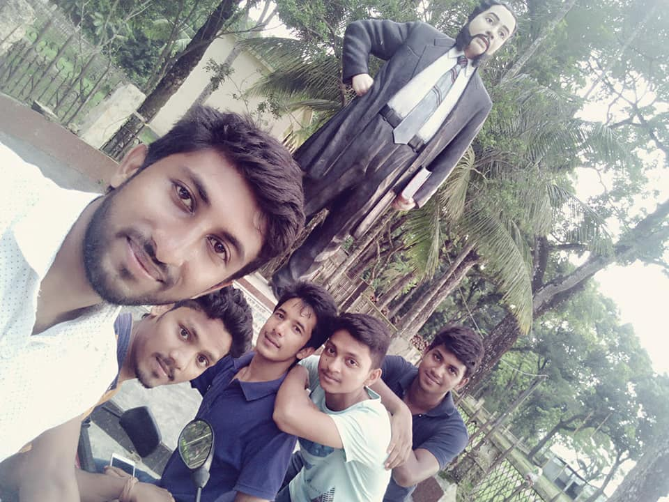
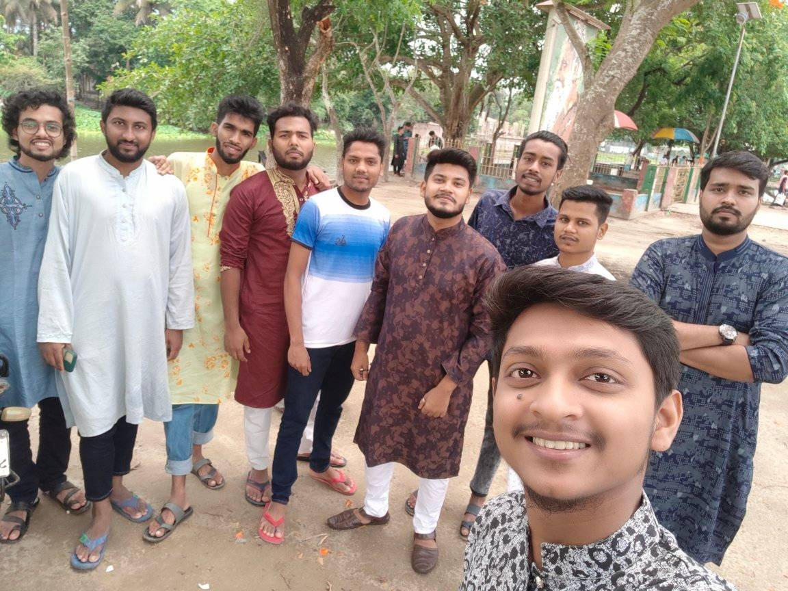
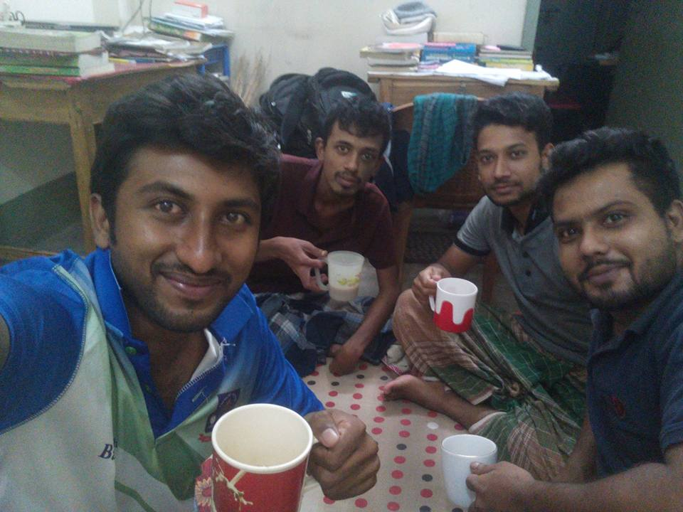
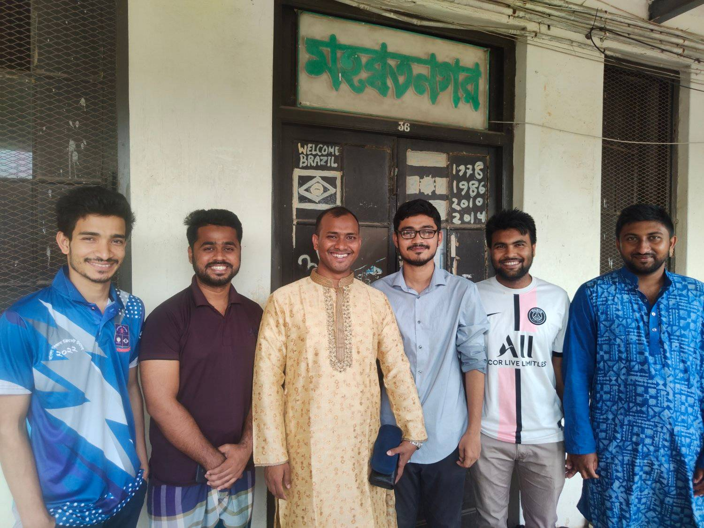
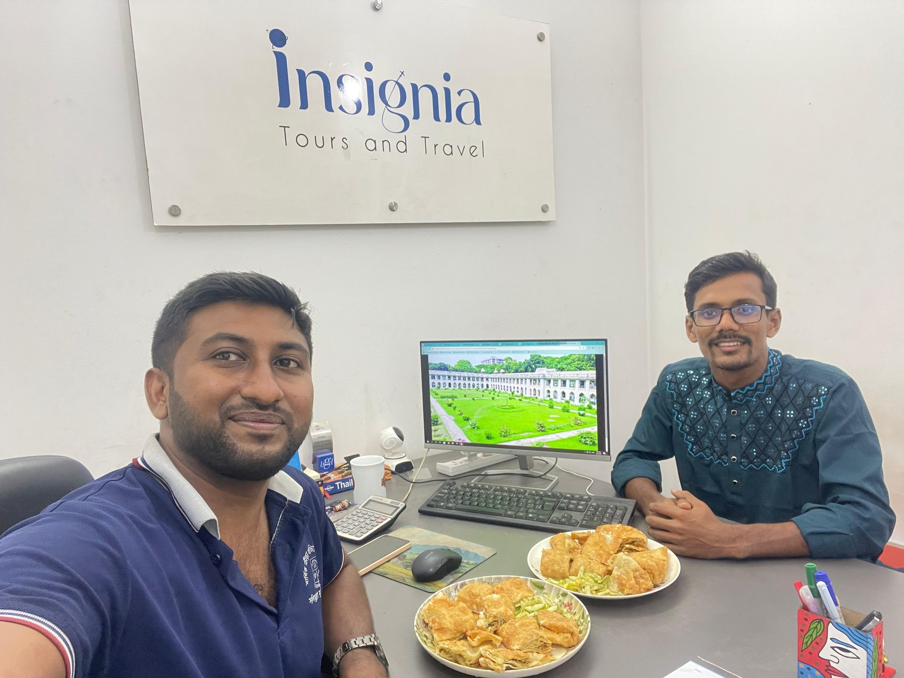

Keshabpur, Jashore – Ancestral Roots
My ancestral home is in Pancharia village under Keshabpur Upazila, Jashore District. Although my grandparents passed away when my father was young, this village remains a part of my identity and heritage. It represents the roots from which my family history began.


Kushtia – My Birthplace & Childhood
After completing his education, my father moved to Kushtia for professional reasons. I was born and raised in Kushtia District, making it my true hometown.
Our home is located in Housing Estate, B Block, Kushtia. My childhood, schooling, and early dreams were shaped here.

Mirpur-1, Dhaka (2016 – Admission Journey)
After completing my Higher Secondary examination in 2016, I moved to Dhaka for university admission coaching. From May to December 2016, I lived in Mirpur-1. It was the beginning of my independent life in the capital city.

Azimpur & Lalbag Area (2017 – 2019)
From January 2017 to 2019, I lived in a mess near Khan Mohammad Mridha Mosque at 12, Harmohan Shil Street, Azimpur. This period was full of academic struggle, tutoring, and self-development.

University of Dhaka – Salimullah Muslim Hall (2019 – July 2024)
From 2019 until July 2024, I lived at the historic Salimullah Muslim Hall of the University of Dhaka. Hall life taught me leadership, brotherhood, resilience, and independence.
During the July movement, when the hall was closed, I temporarily stayed in East Rajabazar at my students’ mess. After the movement ended, I returned to the hall for a short period.

Mirpur-10, Dhaka – Present Residence
Since October 2024, I have been living in Mirpur-10, B Block, Dhaka. This is my current residence. From here, I continue my professional responsibilities and personal journey with renewed focus and ambition.
